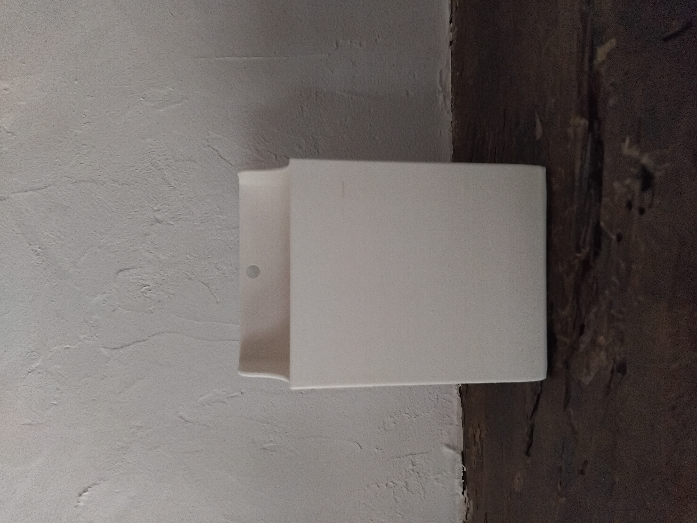
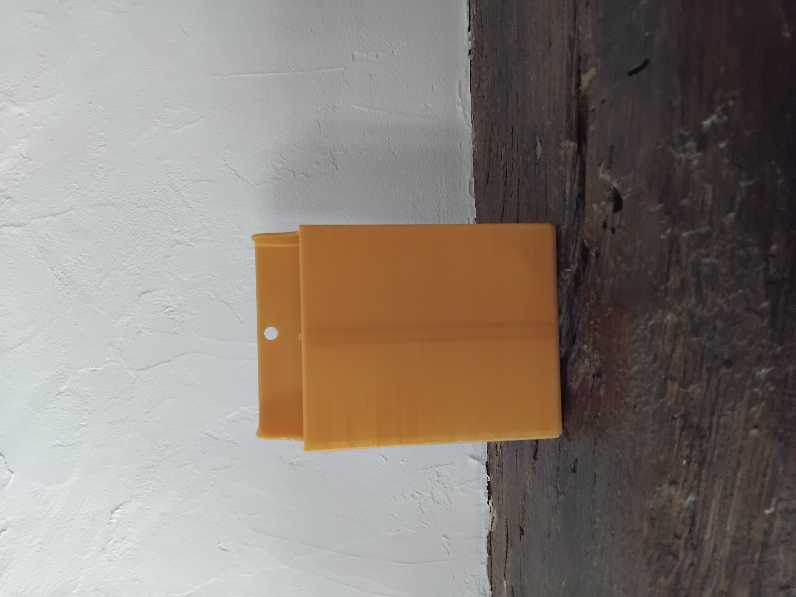

<html>
  <head>
    <meta charset="UTF-8" />
    <meta name="viewport" content="width=device-width, initial-scale=1.0" />
    <title>Potes coll'</title>
    <link rel="icon" type="image/png" href="../../images/icon.png" />
    <link rel="stylesheet" href="style.css" />
    <link rel="stylesheet" href="../shared_style.css" />
  </head>
</html>

<body>
  <header>
    <div class="header-flex">
      <map name="Potes_coll">
        <area shape="rect" coords="0,0,952,210" href="../home/index.html" />
      </map>

      

      <map name="EPA">
        <area
          shape="rect"
          coords="0,0,272,186"
          href="https://www.entreprendre-pour-apprendre.fr/"
          target="blank"
        />
      </map>

      
    </div>
  </header>
  <main>
    <h1>Le biopote</h1>
    <strong
      >Cette année, nous vendons des biopotes, des pots à crayons aimantés
      disponibles en différentes gammes :
    </strong>
    <h2>Caractéristiques générales</h2>
    <p>
      Les biopotes sont des pots aimantés permmetant d'entreposer diverses types
      de fournitures tel que des feutres à tableau ou tout autre objet du
      quotidien. Imprimés en 3D à partir de plastique biodégradable, ils sont
      solides, pouvant résister à une chute depuis quelques mètres, puissamment
      aimantés et peuvent stocker une grande quantité de fourniture.
    </p>
    <p>
      Ils peuvent être posés sur un bureau, aimantés à un frigo ou un tableau ou
      encore pendus à un crochet. De plus, différents modèles sont disponibles
      selon vos goûts et besoins.
    </p>
    <h2>Modèle standart</h2>
    <p>Disponible en 3 coloris : blanc, turqoise et vert :</p>
    <div class="gallery-container">
      
      <div id="photoNumber_standart">1/8</div>

      <div class="controls">
        <button id="prevBtn_standart"><</button>
        <button id="nextBtn_standart">></button>
      </div>

      <div class="colors">
        <button data-color="blanc" class="colorBtn" id="blanc">Blanc</button>
        <button data-color="turquoise" class="colorBtn" id="turquoise">
          Turquoise
        </button>
        <button data-color="vert" class="colorBtn" id="vert">Vert</button>
      </div>
    </div>
    <p>
      Equipée d'une grande bande d'aimant unique réemployée, la version standart
      reste dans des coloris sobres et passe-partout.
    </p>
    <p>Caractéristiques :</p>
    <ul>
      <li>prix : 6€</li>
      <li>poids : 80g</li>
      <li>hauteur : 12cm</li>
      <li>largeur : 8,4cm</li>
      <li>longueur : 5cm</li>
      <li>poids maximal du contenu* : 500g</li>
    </ul>

    <h2>Edition Spéciale</h2>
    <p>Le bipote existe également en édition spéciale limitée couleur doré :</p>
    <div class="gallery-container">
      

      <div id="photoNumber_dore">1/14</div>

      <div class="controls">
        <button id="prevBtn_dore"><</button>
        <button id="nextBtn_dore">></button>
      </div>
    </div>
    <p>
      L'édition spéciale est équipé d'un séparateur amovible afin d'organiser
      mieux vos fourniture. De plus, elle est équipé de 2 bande d'aimant de
      qualité supérieur avec une meilleur capacité de soutien et est constitué
      d'un plastique de meillleur qualité.
    </p>
    <p>Caractéristiques :</p>
    <ul>
      <li>prix : 9.50€</li>
      <li>poids du pot : 85g</li>
      <li>poids du séparateur : 5g</li>
      <li>hauteur : 12cm</li>
      <li>largeur : 8,4cm</li>
      <li>longueur : 5cm</li>
      <li>poids maximal du contenu* : 750g</li>
    </ul>
    <p class="asterique">
      * poids maintenu par les aimants du pots sur une surface adaptée, en
      négligeant le poids du pot.
    </p>
  </main>
  <footer>
    <h4>Nous contacter :</h4>
    <div class="foot">
      <div>
        <map name="insta">
          <area
            shape="rect"
            coords="0,0,225,255"
            href="https://www.instagram.com/mini_monnet"
            target="blank"
          />
        </map>
        

        <map name="mail">
          <area
            shape="rect"
            coords="0,0,720,720"
            href="mailto:minie.clgjm@gmail.com"
            target="blank"
          />
        </map>
        
      </div>
      <p class="note">
        Ce site web à été réalisé par
        <a href="https://github.com/Adrien-Leveque" target="_blank"
          >Adrien Lévêque</a
        >
        , élève de 3e du collège Jean Monnet à Luisant.
      </p>
    </div>
  </footer>
  <script src="script.js"></script>
</body>
